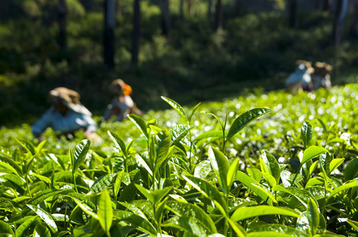
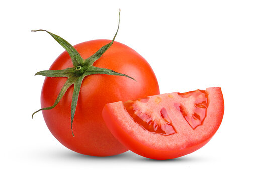
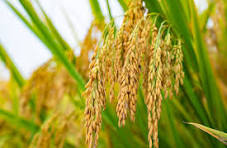
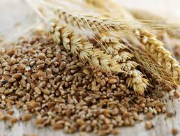
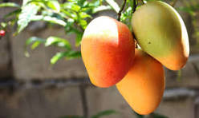
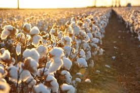

Information of Different Crops

Tea
- Varieties: The two main varieties are Camellia sinensis var. sinensis (China tea) and Camellia sinensis var. assamica (Assam tea).
- Climate: Thrives in hot, humid climates with well-drained acidic soil (pH 4.0–6.5).
- Harvesting: Plants take about 3 years to reach maturity for harvesting. Only the top two leaves and the terminal bud are typically picked (a process called plucking).

Tomato
- Planting Method: Transplanting is superior; start seeds indoors or use established seedlings. Harden them for 2 weeks before moving to the garden.
- Planting Technique: Plant deep (burying lower stem nodes) to promote strong root systems. Space plants 18–24 inches apart.
- Watering: Deep, consistent watering is essential to prevent fruit cracking and blossom end rot.

Corn
- Varieties: The two main varieties are Camellia sinensis var. sinensis (China tea) and Camellia sinensis var. assamica (Assam tea).
- Climate: Thrives in hot, humid climates with well-drained acidic soil (pH 4.0–6.5).
- Harvesting: Plants take about 3 years to reach maturity for harvesting. Only the top two leaves and the terminal bud are typically picked (a process called plucking).
Crop Categories

Rice
Nutritional Values:
- Calories: 130 per 100g
- Carbohydrates: 28g
- Protein: 2.7g
- Fiber: 0.4g
Potential Uses: Staple food, flour, rice bran oil, animal feed.

Rice
Nutritional Values:
- Calories: 130 per 100g
- Carbohydrates: 28g
- Protein: 2.7g
- Fiber: 0.4g
Potential Uses: Staple food, flour, rice bran oil, animal feed.

Mango
Nutritional Values:
- Calories: 60 per 100g
- Carbohydrates: 15g
- Vitamin C: 36mg
- Fiber: 1.6g
Potential Uses: Fresh fruit, juice, jam, desserts.
Tomato
Nutritional Values:
- Calories: 18 per 100g
- Vitamin C: 13.7mg
- Potassium: 237mg
- Fiber: 1.2g
Potential Uses: Salads, sauces, soups, cooking ingredient.

Cotton
Nutritional Values: Not applicable
Potential Uses: Textile, oil, animal feed.